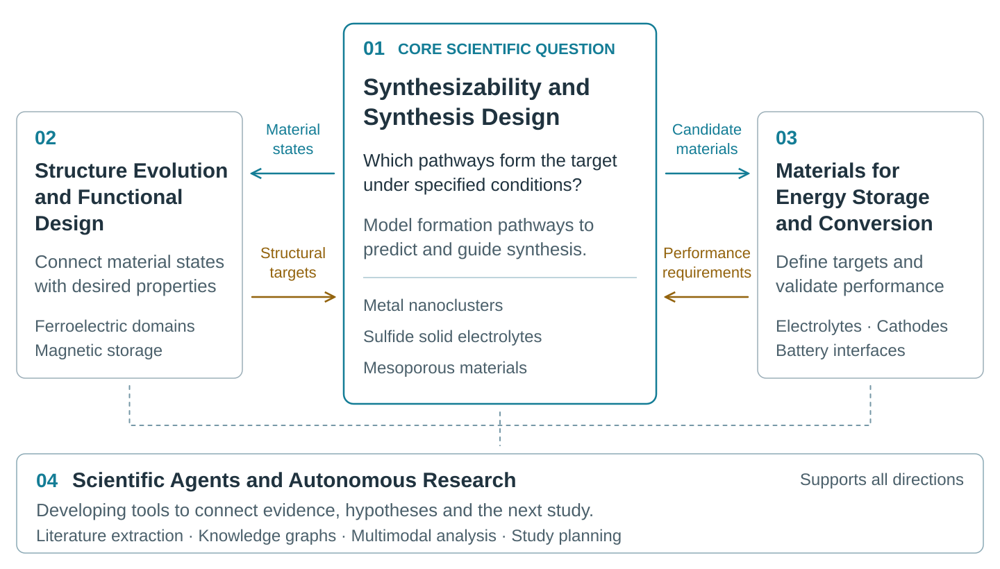

Research
Reliable synthesis is our central scientific challenge.
To build the materials we need, we must connect a desired material with a viable formation pathway and an experimentally verified outcome. We combine AI, reaction science and experimental feedback to understand how precursors become materials, and how synthesis decisions shape the structures and functions we obtain.

01 / CORE SCIENTIFIC QUESTION
Synthesizability and Synthesis Design
Which precursors, pathways and conditions can reliably produce a target material?
We study how thermodynamic driving forces, reaction kinetics and transport govern the path from precursors through intermediate states to target or competing products. AI models, process characterization and controlled experiments help us infer reaction states, compare mechanistic explanations and guide synthesis decisions.
Ongoing Projects
Metal Nanocluster Design and Synthesis Agents
Developing agents that connect literature evidence, nanocluster design and synthesis planning. Candidate structures and routes are assessed against chemical constraints and refined through experimental feedback.
Mesoporous Materials: Synthesis Recommendation and Formation Mechanisms
Learning from synthesis records to recommend preparation conditions and investigate how they influence mesoporous structure formation. Recommendations guide experiments that test competing formation mechanisms.
In-Situ Reaction and Phase-Evolution Modeling
Combining time-resolved observations with thermodynamic and kinetic models to infer intermediate states and predict phase evolution. Sulfide solid electrolytes provide a research system for investigating precursor conversion, competing phases and the conditions that favor a target phase.
02 / CONNECTING STRUCTURE WITH FUNCTION
Structure Evolution and Functional Design
How do material structures form and evolve, and how do these states determine function?
We develop physical and data-driven models of evolving material states, from domain patterns to coupled fields. Connecting these predictions with functional measurements can help identify the structures, processing conditions and operating conditions needed for a desired response.
Ongoing Projects
Three-Dimensional Domain-Structure Prediction
Developing physics-based and data-driven models of three-dimensional ferroelectric domain structures. Predictions are evaluated against physical constraints and available observations, with the goal of connecting domain evolution to functional response.
Supporting Work in Process Modeling
These ongoing projects develop methods for evolving fields and signals in processing equipment.
Semiconductor Equipment Digital Twins and Thermal Fields
Developing thermal-field models and integrating them with equipment operating data toward digital twins of semiconductor processing systems. We aim to track equipment states and evaluate the effects of changes in operating conditions.
Optical Emission Spectroscopy Forecasting
Developing time-series models to predict the evolution of optical emission spectroscopy (OES) signals in semiconductor processing. We examine how operating conditions affect spectral dynamics and forecast reliability.
03 / APPLICATION AND VALIDATION
Materials for Energy Storage and Conversion
Can designed and synthesized materials deliver the required performance under working conditions?
Energy applications define requirements for transport, stability and interfacial behavior, and provide a setting to test whether material design and synthesis achieve their intended function. Measurements on real samples feed back into material selection, synthesis conditions and mechanistic models.
Ongoing Projects
Electrolyte Discovery: From Atomistic Screening to Synthesis
Developing high-throughput workflows for polymer and solid electrolytes using density functional theory (DFT), machine-learning interatomic potentials (MLIPs) and property models. We assess structure, stability and ion transport, then test selected candidates through synthesis and characterization.
Multiscale Modeling of Cathode Materials
Connecting atomistic material behavior with particle- and electrode-scale models of transport, deformation and fracture. We investigate how composition and microstructure shape coupled electrochemical and mechanical responses.
In-Situ Characterization of Dynamic Battery Interfaces
Tracking interfacial reactions and structural changes in polymer-electrolyte and solid-state battery systems. In-situ measurements and complementary evidence help test how interface evolution affects transport and stability.
Battery Degradation and Lifetime Prediction
Learning from battery cycling histories to forecast degradation trajectories and lifetime. We investigate how operating conditions influence prediction accuracy and transfer across different test conditions.
04 / A CAPABILITY ACROSS OUR RESEARCH
Scientific Agents and Autonomous Research
How can a research system use evidence to propose, test and revise its next hypothesis?
We are developing scientific agents that connect literature extraction, knowledge graphs, multimodal analysis, and computational or experimental tools. Our focus is the research loop: organizing evidence, proposing testable hypotheses, selecting the next study, analyzing results and updating the explanation.
We study how agents can identify conflicting evidence, compare competing mechanisms and select informative studies. Traceable decisions and researcher oversight support progressively more autonomous workflows.
Ongoing Projects
Integrated Autonomous Laboratory Workflows
Developing workflows that connect synthesis equipment, characterization, data capture and analysis. Traceable links between experimental conditions and outcomes provide the basis for closed-loop operation.
Closed-Loop Experimental Planning
Using experimental feedback and active learning to select the next synthesis or characterization step. We study how to balance materials optimization with experiments that resolve uncertainty about reaction mechanisms.
Research Agents for Hypothesis Testing
Developing agents that connect source-grounded literature extraction, knowledge graphs and multimodal evidence analysis with hypothesis formulation and research planning. The aim is to compare alternative explanations and revise research plans as new results become available.
One shared loop connects our work: application needs guide material targets; formation models guide synthesis; structural and functional measurements test the outcome; and new evidence informs the next decision.